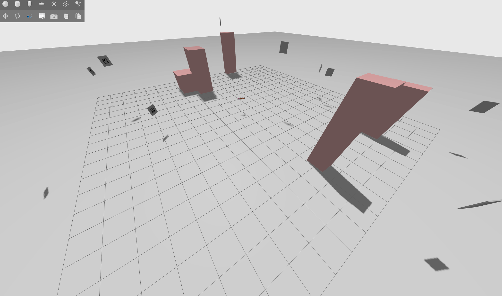
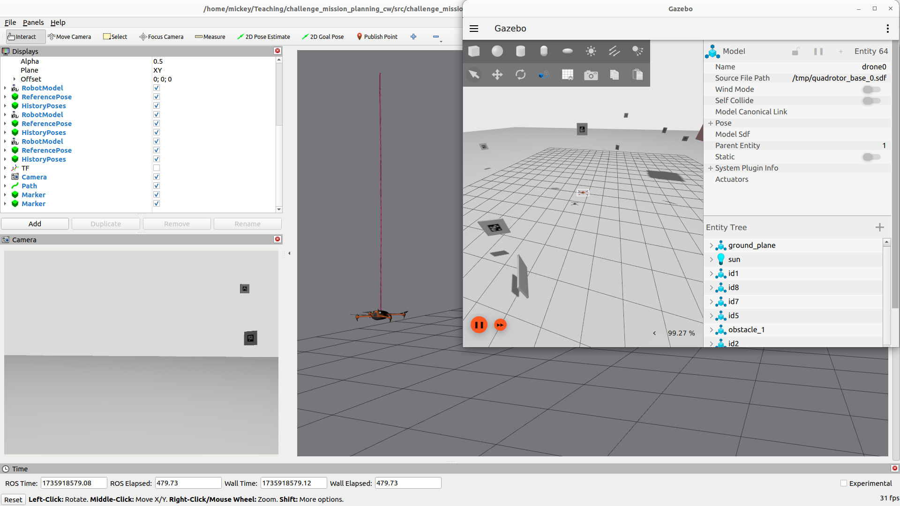

Coursework 1 Challenge: Structural Inspection Path Planning¶
NOTE: If you run into any issues, create an issue on the github repository: challenge_mission_planning

Challenge¶
You have the challenge of solving the problem of finding the most optimal way of visiting a series of locations and taking pictures of markers, while avoiding the obstacles in the environment. This mirrors real life autonomous inspection scenarios which are the majority of current day use cases with autonomous drones.
Structural Inspection Path Planning¶
The structural inspection path planning problem is often broken down into three different problems
- 3D Viewpoint generation, in which a 2.5D or CAD model of the structure is used to determine the optimal set of camera positions which need to be visited in order to generate enough data for a reconstruction.
- [This Challenge] Coverage Path Planning / Tour Optimisation & Trajectory Generation, then tries to find the optimal ordering of viewpoints to visit, potentially including the optimal trajectory itself. This often attempts to minimise time, travel distance, energy or other factors.
- Trajectory Following & Control is then the lower level controller which attempts to follow the calculated optimal coverage path as close as possible in order to capture the images in a location as close as specified.
For further information on structural inspection path planning, see this article
Your Challenge¶
In this challenge we focus on the second step of finding the optimal route around a set of viewpoints.
You will be given a scenario which specifies:
- The drone starting location
- The position and orientation (pose) of each of the viewpoints which you are being requested to visit
- The location of cuboid shaped obstacles to avoid
A set of scenarios have been given within the scenarios folder for you to use for development and testing.
Your challenge will be in implementing and comparing a set of methods for controlling a drone to fly around the viewpoints, verifying that all of the specified aruco targets have been seen and visited, whilst avoiding the obstacles. You will need to consider the following:
- Optimal routing and finding a solution to the path planning problem
- Motion planning and how to route from one viewpoint to another to avoid collisions while preserving energy
- Logging to ensure that your solution has collected "data" and visited every target to proove completion to a potential client.
- Calculation of relevant metrics (time, distance, speed, etc) for comparison of various methods.
Interesting things to look up to get you started¶
- Travelling Salesman Problem
- Combinatorial Optimisation
- Complete routing graph of all the connectivity of the viewpoints
- Consider the value of the weight on each edge on the routing graph
- Dubins Paths
- Visualise your paths, maps and routes
- Python Libraries:
- scipy
- numpy
- python_tsp
- networkx
- matplotlib
Challenge Environment¶

Just as with the previous gazebo aruco mini-challenge, this will also be within aerostack2 and ros2 and will hopefully build upon the scripts and knowledge you have gained through doing that task. However, we have created a new repository specifically for this application.
The repository is here: challenge_mission_planning
Installation¶
For this project, we assume that you are already familiar with the installation process from the gazebo aruco mini-challenge.
Follow the README.md in the challenge repository for installation instructions
Running the environment¶
The README.md goes into full details of each command, but essentially you will need two terminals, both in the root of the repository:
In terminal 1 run the following to launch the drone simulation of scenario1, and you will see gazebo popup.
./launch_as2.bash -s scenarios/scenario1.yaml
In this tmux, I have enabled the mouse so you should be able to scroll and such (still havent figured out copy paste though...)
And in a second terminal, you can run the ground station, which will spin up the visualisation software rviz2 as well as provide a prompt for you to run your mission (Though you can run your python mission from everywhere, provided you source /mission_planning_ws/install/setup.bash first)
./launch_ground_station.bash
# or if you want to play around with teleoperating the drone
./launch_ground_station.bash -t
Remember: If you want to close the simulation down, just run the
stop.bashscript from the repository root in any terminal or tmux window.
Building your solution¶
We have provided a very basic sample solution in mission_scenario.py which simply reads the scenario file, iterates through the viewpoints and visits them one by one.
# From the root of this repository
python3 mission_scenario.py -s scenarios/scenario1.yaml
The same camera control script from the previous mini-challenge is also available at
mission_cmaera.py
Your challenge will be to build upon this script in any way you see fit to provide an efficient solution to the problem. You have free reign to build your own libraries, use existing python libraries and create solutions which can provably solve your problem. In order to validate and verify your solution, you will need to add logging and metrics to enable comparison and proof of the effiency of your proposed solution. Finally, imagine that you are selling this as a product to a customer, you will need to provide some sort of guarantee that the task - visiting and photographing all targets - has been completed.
We have provided 3 sample scenarios in the scenarios directory with which you can test your proposed solutions on:
- scenario1.yaml: A low number mix of targets and obstacles
- scenario2.yaml: A large number of targets only
- scenario3.yaml: A small number of targets but many obstacles
Note: The utils
generate_scenario.pyscript can generate more scenarios for you if you wish.
Coursework Submission¶
Rules, processes and markscheme for submission will be released closer to the date.
Recommended Tasks¶
-
Install this repository and run the example code
- What is this mission file doing?
- Does it work for other scenarios?
-
Write down on a piece of paper, the various parts that you might need to implement
- What functionalities does you system need
- What data structures do you need to enable those functionalities
-
Implement some sort of internal map representation to enable planning
- What sort of map should this be?
- What functionalities does a map enable?
-
Find or implement a simple path planning e.g. A*
- What will the results of the path planning be used for?
- Which routes do we need to apply the path planning for?
-
Find a library which will help solve the travelling salesman problem (TSP)
- Why do we need to solve the TSP?
- What data representation does the TSP need?
- What are the weights going to be for solving the TSP
-
Using the aruco detection from the previous mini-challenge, implement a method of checking which points you have visited, and whether the task is complete?
-
Implement timing and the calculation of metrics
- What metrics are best for comparing solutions to this problem?
-
What methods could you use to improve my solution?
- How could you make it faster?
- What are the drawbacks of your solution?
- Are there any edge cases?